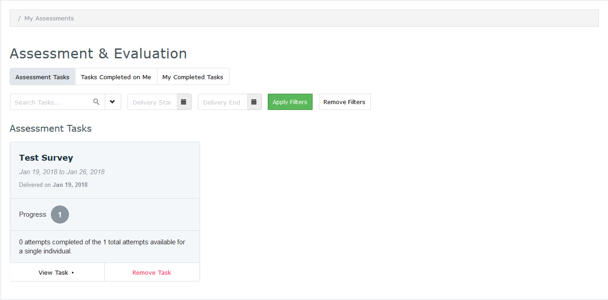

Assessment and Evaluation
When you click on Assessment & Evaluation at the top right corner of the screen, you will be able to complete assessment tasks, view tasks completed for yourself, and view your previously completed tasks.

- Refer to the top, right portion of the screen
- Click the Assessment & Evaluation link to be directed to student assessments
- Click the corresponding tab to view
- Assessment Tasks – Course/instructor evaluations you must complete
- Tasks Completed on Me – Results of assessments completed about you
- My completed Tasks – Assessment tasks you have completed
View Pending Assessment Tasks
- Click Assessment Tasks
- Assessments to complete are displayed
- Click View Task from the displayed list
- Complete the fillable form
- Press (a) Save as a Draft to complete later or (b) Submit
View Assessments Completed on You
For some assessments you are able to view the contents of a survey completed on you. Some results show the entire form, while others only show the free text comments.
- Click Tasks Completed on Me
- To download a PDF version
- Click the Download PDF box or
- Press Select All followed by Download PDF
View Your Previously Completed Tasks
Students are able to review previously completed surveys from the My Completed Tasks tab.
- Click on My Completed Tasks
- Click View Task to review an individual survey
- Click the Download PDF or Select All followed by Download PDF to download and review multiple surveys